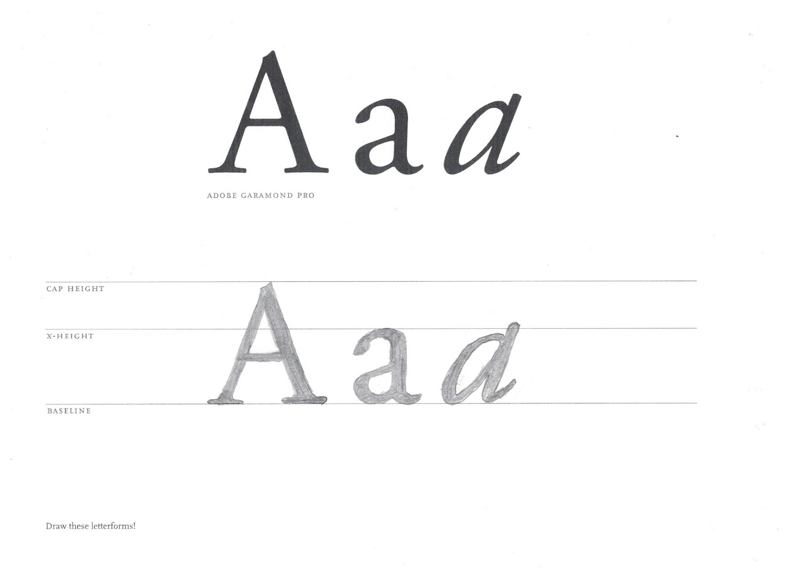

Exercise 1
Draw These Letterforms
Description:
To the best of your ability, draw the letterforms in the space provided and scan or take a digital photograph of the draw_letters sheet. Upload your scanned file or digital photograph in JPG format and Turn In this exercise.

To begin, I printed out two of these sheets, and practiced outlining over each letter on the first sheet, then freehanding it over to the second sheet for reproduction. On the freehand section for the capital 'A', I realized that the cross bar was somewhere quite low, with a width of about the top left edge of the 'A'. The lowercase 'a' went smoothly, as the letter fits perfectly within the x-height and the baseline. The notable part of this one was the thickness change at the very top of the letter, narrowing out quite a bit on the bottom edge. As for the italicized 'a', this one was quite tricky. First, the letter does not confine itself to the x-height because it is italicized, forcing the top of the round edge just under the x-height, and the rightmost stem extends just above it. Getting the thickness right for the character was difficult and took a bit of time before I got it right. Afterwards, I shaded the letters in with my pencil. This assignment sure took a lot of detail work, as those serifs add a bit of complexity and character to the typeface.